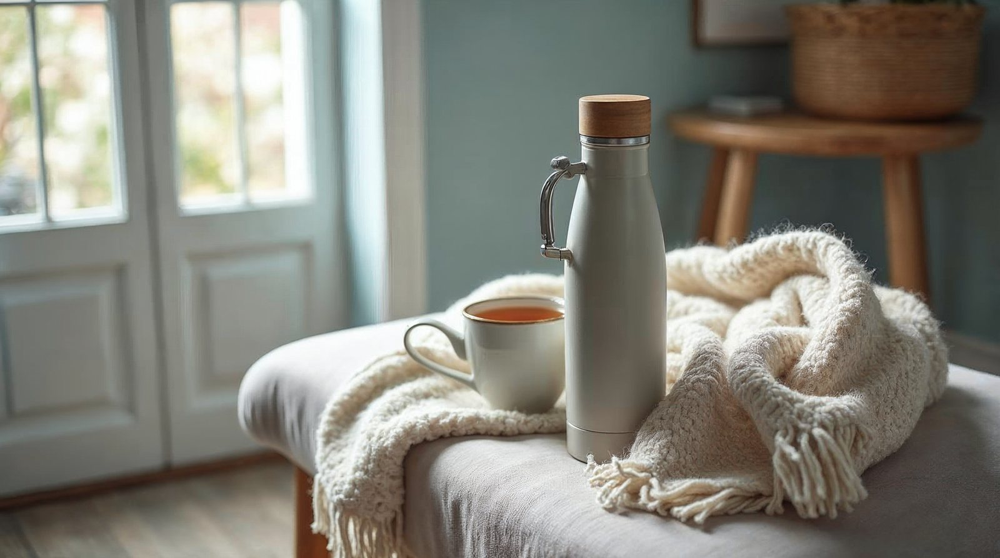
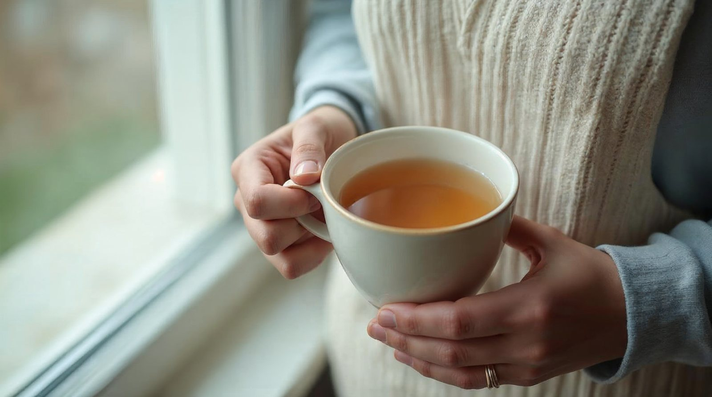
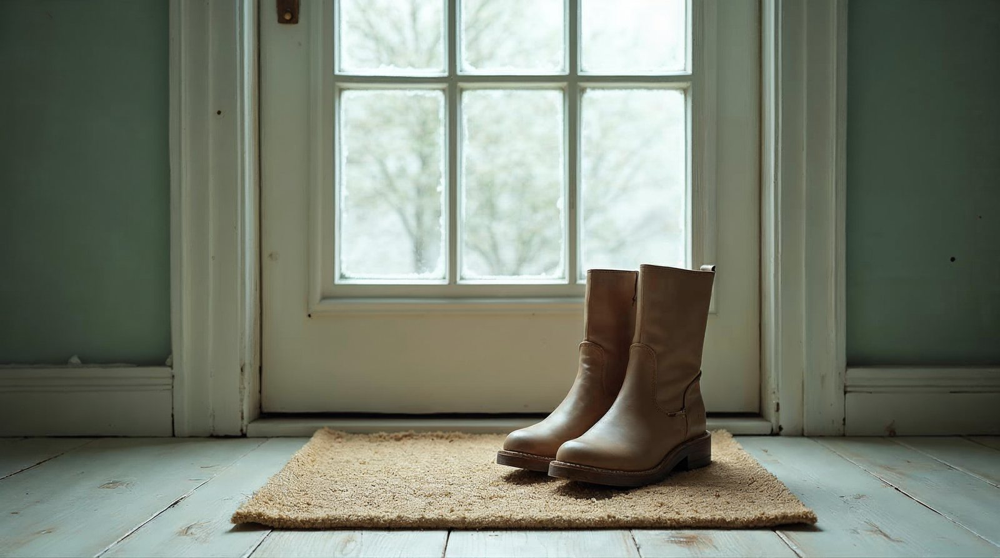
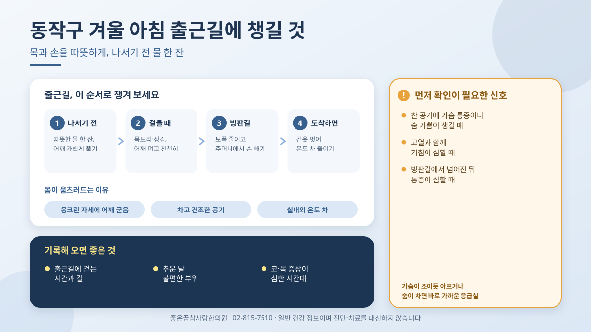

이종호 한의사 감수좋은꿈참사랑한의원 대표원장 (한의사 면허번호 19769)발행 2026-11-23 · 수정 2026-11-26
이 글의 차례
- 왜 이런 불편이 생길 수 있나요
- 왜 추운 아침에는 유독 목과 어깨가 굳을까요?
- 집을 나서기 전 5분, 무엇을 하면 좋을까요?
- 먼저 이렇게 여쭙니다
- 일상에서 먼저 해 볼 수 있는 것
- 출근길 옷차림은 어떻게 챙기면 좋을까요?
- 스스로 점검해 보세요
- 예를 들면 이런 경우입니다
- 빙판길과 계단은 어떻게 걸으면 좋을까요?
- 출근길을 조금 바꿔 보는 것도 방법입니다
- 지하철과 버스 안에서는 어떻게 서 있을까요?
- 어르신이 겨울 아침에 나서실 때
- 일터나 교실에 도착해서는 어떻게 할까요?
- 코와 목이 마르고 칼칼할 때는?
- 아침 식사는 어떻게 챙기면 좋을까요?
- 퇴근 뒤 저녁에는 어떻게 쉬면 좋을까요?
- 손발이 유난히 찬 분이라면
- 얼마나 지켜보고, 언제 상담할까요?
- 한의원에서 함께 살필 수 있는 경우
- 처음 오시면 무엇을 여쭙고 살피나요?
- 이렇게 기록해 오시면 상담이 쉬워집니다
- 이런 증상은 먼저 확인이 필요합니다
겨울 아침 출근길에는 목도리와 장갑으로 목과 손을 따뜻하게 하고, 집을 나서기 전 따뜻한 물 한 잔과 가벼운 어깨 풀기를 해 두는 것만으로도 몸이 덜 움츠러듭니다. 노량진역, 상도역으로 향하는 찬바람 속에서 몸을 웅크리고 걷다 보면 회사에 도착할 즈음 어깨가 뻣뻣해지기 쉽기 때문입니다.
동작구는 언덕과 계단이 많아 겨울 아침이면 찬바람을 정면으로 맞으며 오르막을 걷는 분이 많습니다. 숨이 차오르는데 몸은 움츠러들고, 역에 도착하면 따뜻한 지하철 안에서 땀이 나기도 합니다. 저는 이런 겨울 출근길이 몸에 생각보다 많은 일을 시킨다고 느낍니다.
왜 이런 불편이 생길 수 있나요
- 추위에 어깨를 움츠린 자세가 오래 이어지면 목과 어깨 근육이 굳기 쉽습니다.
- 차고 건조한 공기는 코와 목 점막을 마르게 해 코막힘이나 목 따가움으로 이어질 수 있습니다.
- 따뜻한 실내와 찬 바깥을 자주 오가면 몸이 온도 차에 적응하느라 쉽게 지칠 수 있습니다.
- 아침을 거르면 몸이 덜 데워진 채로 찬 공기를 맞게 됩니다.
- 두꺼운 옷과 무거운 가방을 메고 걸으면 어깨에 실리는 무게도 늘어납니다.
왜 추운 아침에는 유독 목과 어깨가 굳을까요?
몸은 추위를 느끼면 열을 빼앗기지 않으려고 목을 움츠리고 어깨를 귀 쪽으로 끌어올립니다. 이 자세를 유지하려면 목과 어깨 근육이 계속 힘을 주고 있어야 해서, 20~30분만 걸어도 그 부위가 금세 지칩니다.
아침에는 밤새 누워 있던 몸이 아직 덜 풀린 상태입니다. 근육이 데워지기 전에 찬 공기 속으로 나가면, 같은 걸음이라도 낮보다 더 뻣뻣하게 느껴집니다.
찬바람을 피하려고 고개를 숙이고 걷는 습관도 목에 부담을 더합니다. 여기에 두꺼운 외투와 무거운 가방까지 더해지면, 회사나 학교에 닿기도 전에 어깨가 묵직해지기 쉽습니다.
집을 나서기 전 5분, 무엇을 하면 좋을까요?
- 따뜻한 물이나 차를 한 잔 천천히 마시기
- 어깨를 앞뒤로 다섯 번씩 크게 돌리기
- 양손을 깍지 껴 앞으로 쭉 밀며 등 펴기
- 제자리에서 발뒤꿈치를 들었다 내리기를 열 번쯤 하기
- 현관에서 목도리를 두르고 장갑을 낀 뒤 나서기
몸을 조금 데운 뒤 나가면 찬 공기에 닿았을 때 움츠러드는 정도가 덜합니다. 시간이 없다면 어깨 돌리기 한 가지만이라도 해 보세요. 아프지 않은 범위에서 천천히 하는 것이 좋습니다. 매일 같은 순서로 하다 보면 따로 시간을 내지 않아도 습관이 됩니다.

먼저 이렇게 여쭙니다
- 출근길에 걷는 시간이 얼마나 되나요?
- 목도리나 장갑을 챙기시나요?
- 아침 식사를 하시나요?
- 코막힘이나 목 건조함이 자주 있나요?
- 추운 날 가장 먼저 굳는 곳은 어디인가요?

일상에서 먼저 해 볼 수 있는 것
- 목도리와 장갑으로 목과 손 따뜻하게 하기
- 집을 나서기 전 따뜻한 물 한 잔 마시기
- 걸을 때 어깨를 펴고 천천히 숨 쉬기
- 실내에 들어가면 겉옷을 벗어 온도 차 줄이기
- 빙판길에서는 보폭을 줄이고 주머니에서 손을 빼 균형 잡기
출근길 옷차림은 어떻게 챙기면 좋을까요?
두꺼운 외투 한 벌보다 얇은 옷을 여러 겹 겹쳐 입는 편이 좋습니다. 걷다가 더워지거나 지하철 안에 들어갔을 때 한 겹씩 벗어 온도를 맞출 수 있어, 땀이 식으며 몸이 다시 차가워지는 일을 줄일 수 있습니다.
목은 목도리나 목까지 올라오는 옷으로 감싸 주세요. 목이 따뜻하면 어깨를 움츠리는 정도가 줄어듭니다. 허리가 쉽게 시린 분이라면 윗옷을 바지 안에 넣거나 긴 내의를 입어 허리가 드러나지 않게 해 주세요.
가방은 한쪽 어깨로만 메기보다 양쪽 어깨에 메는 배낭이 어깨 부담을 나눠 줍니다. 겨울에는 외투 때문에 끈이 미끄러지기 쉬우니, 끈 길이를 짧게 조여 가방이 등에 붙도록 메 보세요.
스스로 점검해 보세요
- 출근길에 어깨가 귀 쪽으로 올라가 있는 것을 자주 느낀다
- 일터에 도착하면 목덜미가 뻣뻣하고 고개 돌리기가 불편하다
- 아침을 거르고 나서는 날이 많다
- 손발이 늘 차서 실내에 들어와도 한참 동안 녹지 않는다
- 겨울만 되면 코가 막히거나 목이 칼칼하다
- 무거운 가방을 한쪽 어깨에만 멘다
세 가지 이상 해당한다면 출근길 습관을 하나씩 바꿔 보세요. 몇 주 해 봐도 불편이 이어진다면 진료 때 이 목록을 그대로 말씀해 주셔도 좋습니다.
예를 들면 이런 경우입니다
- 예를 들어 상도역까지 언덕길을 매일 걸어 내려가는 직장인이라면, 내리막에서 무릎과 허리에 힘이 들어가고 찬바람에 어깨까지 움츠러들기 쉽습니다. 보폭을 줄이고 천천히 걸으며 목도리로 목을 감싸 보세요.
- 예를 들어 이른 아침 학원가로 향하는 수험생이라면, 아침을 거르고 무거운 책가방을 멘 채 오래 서서 신호를 기다리기 쉽습니다. 따뜻한 물 한 잔과 간단한 아침을 챙기고 가방 무게를 줄여 보세요.
- 예를 들어 버스 정류장에서 오래 기다리는 날이 많다면, 한쪽 다리에만 기대 서 있지 말고 양발에 고루 체중을 실어 가볍게 발을 굴러 보세요.
빙판길과 계단은 어떻게 걸으면 좋을까요?
언덕과 계단이 많은 동네에서는 눈이 온 다음 날 아침이 특히 미끄럽습니다. 그늘진 비탈과 계단 끝은 녹았다가 다시 얼기 쉬워, 반짝여 보이지 않아도 살얼음이 있을 수 있습니다.
빙판길에서는 보폭을 평소의 절반쯤으로 줄이고, 발바닥 전체로 땅을 딛는다는 느낌으로 걸어 주세요. 계단에서는 난간을 잡고 한 칸씩 천천히 오르내리고, 휴대폰은 주머니에 넣어 두는 편이 안전합니다.
겨울 신발은 굽이 낮고 바닥에 홈이 깊은 것이 덜 미끄럽습니다. 출근 시간이 빠듯하면 서두르다 넘어지기 쉬우니, 눈 소식이 있는 날은 평소보다 10분쯤 일찍 나서 보세요.
출근길을 조금 바꿔 보는 것도 방법입니다
같은 목적지라도 길에 따라 바람을 맞는 정도가 다릅니다. 큰길을 따라 찬바람이 몰아치는 길보다 건물 사이로 햇볕이 드는 길을 골라 걸으면, 몇 분 차이로도 몸이 한결 덜 움츠러듭니다.
집을 나서는 시간을 5~10분만 앞당겨도 서두르지 않고 걸을 수 있습니다. 서두르면 어깨에 힘이 들어가고 보폭이 커져 미끄러지기도 쉽습니다. 천천히 숨을 고르며 걷는 출근길이 목과 어깨에는 훨씬 너그럽습니다.
걷는 동안 이따금 어깨에 들어간 힘을 알아차리고 툭 내려 주세요. 신호를 기다리는 짧은 순간마다 한 번씩만 해도, 일터에 닿았을 때 목덜미의 묵직함이 덜한 분이 많습니다.
지하철과 버스 안에서는 어떻게 서 있을까요?
출근길 지하철과 버스는 바깥보다 훨씬 따뜻합니다. 탈 때 목도리를 느슨하게 풀고 외투 앞섶을 열어 두면 땀이 덜 차고, 내려서 다시 찬바람을 맞을 때 몸이 덜 놀랍니다.
서서 갈 때는 손잡이를 잡은 팔이 한쪽으로만 치우치지 않도록 중간중간 바꿔 잡아 주세요. 가방은 앞으로 돌려 메면 어깨가 뒤로 당겨지는 것을 줄일 수 있습니다. 앉아서 갈 때는 휴대폰을 무릎 위로 내려 보기보다 눈높이 가까이 들어 고개를 덜 숙여 보세요.
어르신이 겨울 아침에 나서실 때
새벽 운동이나 이른 장보기를 즐기시는 어르신이라면, 해가 뜨고 기온이 조금 오른 뒤로 나서는 시간을 늦춰 보시길 권합니다. 이른 새벽은 길이 가장 미끄럽고 몸도 가장 덜 풀려 있는 때입니다.
나서기 전에 실내에서 팔다리를 가볍게 움직여 몸을 데우고, 모자와 목도리로 머리와 목을 따뜻하게 감싸 주세요. 손은 주머니에 넣지 말고 장갑을 껴서 넘어질 때 짚을 수 있게 해 두시면 좋습니다. 가족이 아침에 한 번 전화로 안부를 여쭙는 것도 든든한 습관이 됩니다.
일터나 교실에 도착해서는 어떻게 할까요?
따뜻한 곳에 들어서면 겉옷을 먼저 벗어 온도 차를 줄여 주세요. 두꺼운 외투를 입은 채 오래 앉아 있으면 땀이 차고, 그 땀이 식으며 몸이 다시 으슬으슬해질 수 있습니다.
자리에 앉기 전에 어깨를 몇 번 돌리고, 따뜻한 물을 한 잔 마셔 몸을 데워 보세요. 출근길에 움츠렸던 목과 어깨를 한 번 풀어 주고 하루를 시작하면 오후의 뻐근함이 덜한 분이 많습니다.
난방이 센 곳이라면 공기가 건조해지기 쉽습니다. 책상 위에 물컵을 두고 자주 마시면 목이 마르는 것을 줄일 수 있습니다. 점심시간에는 잠깐이라도 바깥 공기를 쐬며 걸어 보세요. 햇볕을 받으며 걷는 몇 분이 오후의 몸을 한결 가볍게 해 줍니다.
코와 목이 마르고 칼칼할 때는?
찬 공기는 습기가 적어 코와 목의 점막을 쉽게 마르게 합니다. 출근길에 마스크나 목도리로 코와 입을 살짝 덮으면 들이마시는 공기가 조금 덜 차갑고 덜 건조해집니다.
집에서는 실내가 너무 건조하지 않도록 빨래를 널거나 가습기를 써 보세요. 따뜻한 물을 조금씩 자주 마시는 것도 도움이 됩니다. 코막힘이 잠까지 방해한다면 진료 때 잠의 상태와 함께 말씀해 주세요.
아침 식사는 어떻게 챙기면 좋을까요?
아침을 거르고 찬 공기 속으로 나서면 몸이 데워질 연료가 부족한 채로 걷게 됩니다. 거창한 식사가 아니어도 따뜻한 국물 한 그릇, 죽 몇 숟가락, 데운 두유나 우유 한 잔처럼 속을 데우는 것을 조금이라도 드시고 나서 보세요.
아침에 입맛이 없다면 전날 밤 늦게 먹은 것이 남아 있을 수 있습니다. 저녁을 조금 일찍, 가볍게 드시면 아침 입맛이 돌아오는 분도 있습니다. 찬 음료를 들고 출근하는 습관이 있다면 겨울에는 따뜻한 것으로 바꿔 보세요.
바쁜 아침에 식사를 준비하기 어렵다면 전날 밤에 미리 챙겨 두는 방법도 있습니다. 보온병에 따뜻한 물이나 차를 담아 두었다가 출근길에 조금씩 마시면, 속이 데워지면서 몸이 덜 움츠러드는 것을 느끼실 수 있습니다. 단 음료보다는 따뜻한 물이나 연한 차가 부담이 적습니다.
퇴근 뒤 저녁에는 어떻게 쉬면 좋을까요?
하루 종일 움츠렸던 몸은 저녁에 풀어 주어야 다음 날 아침이 덜 뻣뻣합니다. 집에 돌아오면 따뜻한 물로 샤워하며 목과 어깨에 물줄기를 잠깐 대 주고, 씻은 뒤에는 몸이 식기 전에 옷을 갖춰 입으세요.
잠들기 전 휴대폰을 오래 보면 고개를 숙인 자세가 이어져 목이 쉬지 못합니다. 잠자리에 들기 30분 전에는 화면을 내려놓고 어깨를 천천히 돌리며 숨을 고르는 시간을 가져 보세요.
손발이 유난히 찬 분이라면
장갑을 껴도 손끝이 시리고, 실내에 들어와서도 한참 동안 발이 녹지 않는 분이 있습니다. 이런 분은 양말을 한 켤레 더 신거나 발목까지 덮는 신발을 신어 발목이 찬바람에 드러나지 않게 해 주세요.
손발의 냉기는 잠, 식사, 소화와도 이어져 있는 경우가 많아 진료 때 함께 여쭙습니다. 더 자세한 내용은 겨울에 손발이 유난히 찰 때는 한의원에서 무엇을 살펴보나요?에서 정리해 두었습니다.
얼마나 지켜보고, 언제 상담할까요?
옷차림과 아침 습관을 바꾸고 2~3주 지켜보았는데도 출근길마다 목과 어깨가 굳는다면, 진료를 받아 보시길 권합니다. 어느 길을 얼마나 걷는지, 하루 중 언제 가장 불편한지 적어 오시면 함께 살피기 쉽습니다.
주말에 쉬면 편했다가 월요일 출근길에 다시 굳는 흐름이 반복된다면, 그 흐름 자체가 중요한 단서입니다. 진료 때 그대로 말씀해 주세요. 출근길과 주말의 차이를 함께 보면, 몸을 굳게 만드는 생활 속 원인을 찾는 데 도움이 됩니다.

한의원에서 함께 살필 수 있는 경우
- 추운 날마다 목·어깨가 굳는 경우 긴장과 자세를 함께 살핍니다.
- 찬 공기에 코가 자주 막히는 경우 코와 잠의 상태를 함께 살핍니다.
- 손발이 늘 찬 경우 식사와 생활 리듬을 함께 살핍니다.
좋은꿈참사랑한의원에서는 출근길과 실내 환경, 아침 습관을 먼저 듣고, 진맥을 기본으로 하고 필요하다고 판단될 때 설진을 더해 몸의 냉기와 긴장을 살핍니다. 상태에 맞춰 침·추나·온열·한약 상담 등을 정하고, 계절이 바뀌는 시기에 맞춰 생활 요령을 함께 정리합니다.
처음 오시면 무엇을 여쭙고 살피나요?
처음 오시면 아픈 곳과 함께 출근길이 어떤지부터 여쭙습니다. 걷는 길과 시간, 가방 무게, 옷차림, 아침 식사, 일터의 온도처럼 겨울 아침을 이루는 하나하나가 몸이 굳는 이유와 이어져 있을 수 있기 때문입니다.
진맥은 모든 분께 하고, 필요하다고 판단될 때 설진을 더해 몸의 냉기와 긴장 정도를 살핍니다. 목과 어깨를 직접 움직여 보며 어느 방향이 불편한지 확인한 뒤, 오늘 할 방법과 그 이유를 먼저 설명해 드립니다.
한약 상담을 하게 되면 지금 드시는 약을 먼저 확인합니다. 임신 중이거나 가능성이 있다면 미리 말씀해 주시고, 산부인과와도 상의해 주세요.
이렇게 기록해 오시면 상담이 쉬워집니다
- 출근길에 걷는 시간과 길
- 추운 날 불편한 부위
- 코·목 증상이 심한 시간대
- 아침 식사 여부
이런 증상은 먼저 확인이 필요합니다
- 찬 공기에 가슴 통증이나 숨 가쁨이 생기는 경우
- 높은 열이 나거나 기침이 심한 경우
이런 신호가 있으면 한의원보다 가까운 병원이나 응급실을 먼저 찾으세요.

여쭙는 것
- 출근길에 걷는 시간이 얼마나 되나요?
- 목도리나 장갑을 챙기시나요?
- 아침 식사를 하시나요?
생활에서 해 볼 것
- 목도리와 장갑으로 목과 손 따뜻하게 하기
- 집을 나서기 전 따뜻한 물 한 잔 마시기
- 걸을 때 어깨를 펴고 천천히 숨 쉬기
한의원에서 함께 살필 것
- 추운 날마다 목·어깨가 굳는 경우 긴장과 자세를 함께 살핍니다.
- 찬 공기에 코가 자주 막히는 경우 코와 잠의 상태를 함께 살핍니다.
- 손발이 늘 찬 경우 식사와 생활 리듬을 함께 살핍니다.
먼저 확인이 필요한 신호
- 찬 공기에 가슴 통증이나 숨 가쁨이 생기는 경우
- 높은 열이 나거나 기침이 심한 경우
한눈에 보는 표
| 구분 | 핵심 |
|---|---|
| 여쭙는 것 | 출근길에 걷는 시간이 얼마나 되나요? 목도리나 장갑을 챙기시나요? |
| 생활에서 해 볼 것 | 목도리와 장갑으로 목과 손 따뜻하게 하기 집을 나서기 전 따뜻한 물 한 잔 마시기 |
| 한의원에서 함께 살필 것 | 추운 날마다 목·어깨가 굳는 경우 긴장과 자세를 함께 살핍니다. 찬 공기에 코가 자주 막히는 경우 코와 잠의 상태를 함께 살핍니다. |
| 먼저 확인이 필요한 신호 | 찬 공기에 가슴 통증이나 숨 가쁨이 생기는 경우 높은 열이 나거나 기침이 심한 경우 |
자주 묻는 질문
겨울에 어깨가 더 아픈 것 같은데 기분 탓인가요?
추위에 몸을 웅크리는 시간이 길어져 뻣뻣함을 더 느끼는 분이 많습니다.
출근 전에 할 만한 스트레칭이 있나요?
목과 어깨를 천천히 돌리고 가슴을 펴는 동작을 몇 번 해 보세요.
핫팩을 붙이고 다녀도 되나요?
옷 위에 붙이고 한 곳에 오래 두지 않으면 괜찮은 경우가 많지만, 피부에 직접 닿거나 잠들 때 붙여 두면 저온 화상이 생길 수 있어 조심하세요. 당뇨 등으로 감각이 둔하다면 더 주의해 주세요.
겨울에 손발이 유난히 찬 것도 살펴볼 수 있나요?
네. 손발의 냉기와 함께 잠, 식사, 소화 상태를 여쭙고, 저림이나 색 변화가 있으면 다른 확인이 필요한지 안내합니다.
좋은꿈참사랑한의원은 재진 때 지난번 이야기부터 이어서 여쭙니다. 진료시간과 예약은 오시는 길에서 확인하세요.
어디서 상담받을 수 있나요?
좋은꿈참사랑한의원은 서울 동작구 만양로2길 2 신성빌딩 3층·5층(서울 동작구 상도동, 7호선 상도역 3번 출구 근처)에 있습니다. 한의사 3명(이종호 대표원장, 조영기 수석진료원장, 정원영 진료원장)이 진료합니다. 진료시간은 평일 09:30~20:00(점심 13:00~14:00), 토·일·공휴일 09:30~15:00이며, 방문 전 전화로 확인을 권합니다. 예약은 네이버 예약, 카카오톡 상담, 전화 02-815-7510로 받습니다.
이 글은 일반적인 건강 정보이며 개인의 진단이나 치료를 대신하지 않습니다. 증상이 있거나 복용 중인 약이 있다면 진료를 통해 확인하세요. 치료 효과는 개인마다 다를 수 있습니다.
작성 기준: 일반적으로 알려져 있는 건강 정보를 참고해 정리했습니다(대표원장 감수). 증상 기록은 1~2주 동안 하루 1회, 비슷한 시간에 적어 오시면 지난 상태와 비교하기 쉽습니다.